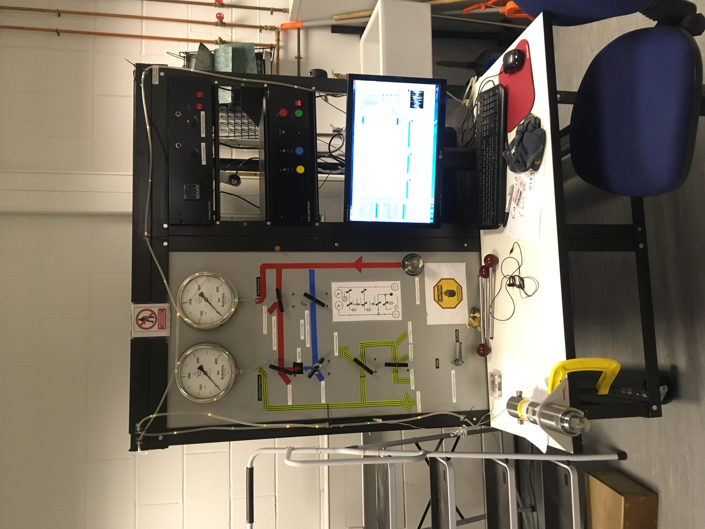
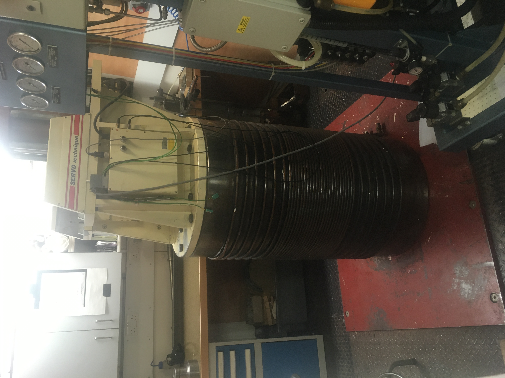
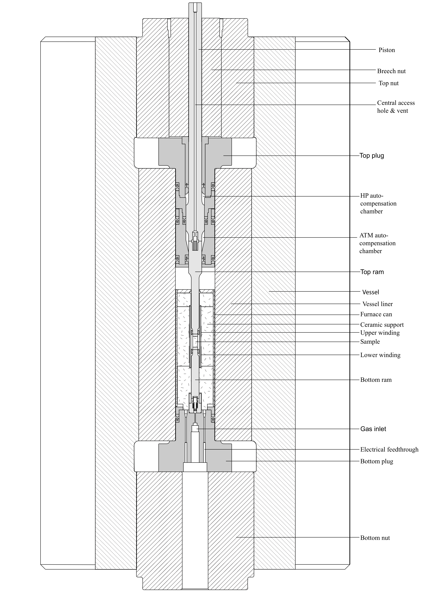
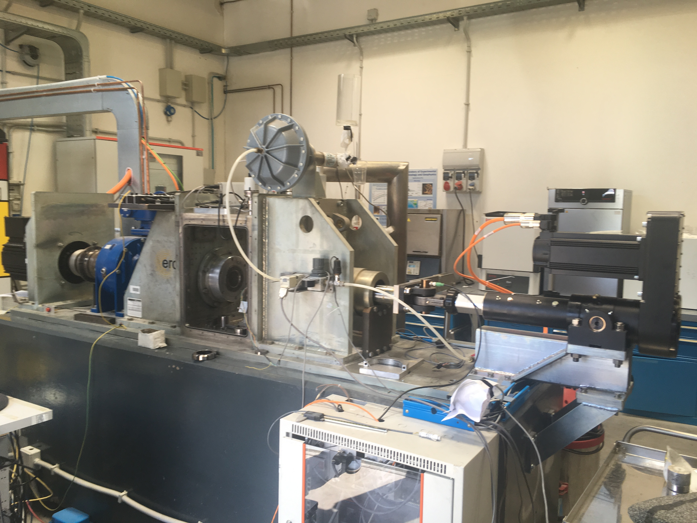
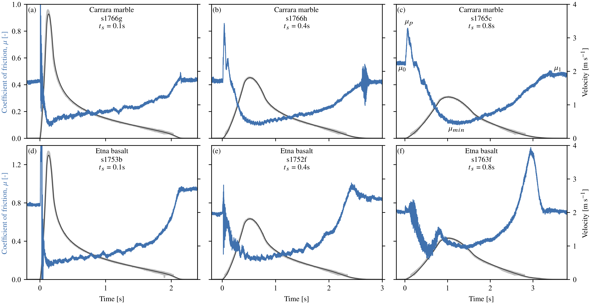

Some machines I have worked with in my career to date.

Triaxial deformation apparatus hosted at the University of Durham, UK. Capable of deforming 20 mm diameter rock samples at hydrothermal conditions, Pc ≤200 MPa, Pf ≤150 MPa, T ≤200°C and a maximum load of 200 kN (=636 MPa). I used this apparatus to investigate the role of roughness in fault friction, and the strength of serpentine gouges.


Argon medium triaxial hosted at UCL, UK. Capable of deforming 10 mm diameter samples at high pressure, high temperature conditions, Pc ≤1 GPa, Pf ≤0.7 GPa, T ≤1000°C and a maximum load of 200 kN (=2.55 GPa). I am currently using this apparatus to investigate semi-brittle rheology in marbles and associated changes in acoustic velocity.

Rotary shear apparatus hosted at INGV, Rome, Italy. Capable of deforming annular samples of up to 50 mm diameter at high sliding velocity, V ≤8 m s-1, σn ≤50 MPa and Pf ≤20 MPa. I implemented a new velocity control program in order to investigate the role of velocity history on strength evolution during earthquakes (see below figure).
